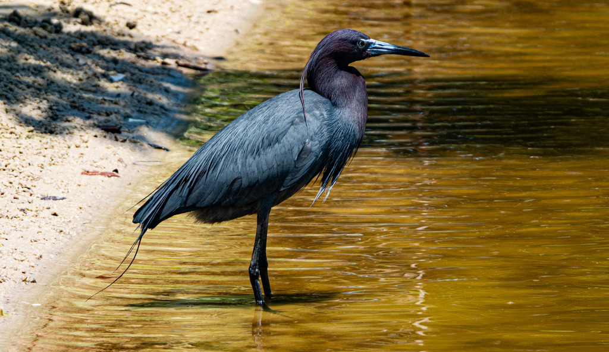

Egretta caerulea
Ardeidae
📷 Photo by Rob Carr · CC-BY-NC · via iNaturalist · 📅 Apr 28, 2025
Quick Hits
- A small, dark-blue heron stalking the shallows — quiet, solitary, and easy to overlook next to the showier egrets.
- Young birds are entirely white, and often mistaken for snowy egrets — the blue comes in gradually during their first year, creating a patchy, piebald look.
- The white-to-blue transition may be a survival strategy: white juveniles are tolerated by snowy egret flocks, gaining safety in numbers until they can fend for themselves.
- It is a State Threatened species in Florida — its numbers have declined with wetland loss.
How to Spot It
Adult
Entirely dark slate-blue with a purplish head and neck. Dark-tipped bill.
Juvenile
Entirely white — easily confused with a snowy egret.
Molting immature
Patchy blue-and-white, a unique calico look.
Bill
Gray with a dark tip — not the yellow bill of an egret.
Voice
Generally silent away from the nest.
What to Look For
A small, dark-blue heron hunting alone in the shallows. If you see a white heron with a gray-tipped bill instead of yellow, it may be a juvenile little blue.
What It Eats
Small fish, frogs, crayfish, and aquatic insects — stalks slowly in shallow water.
Where & When
Where in the park
Pond edges and shallows, often alone. Look for the dark blue adult or the white juvenile with a gray-tipped bill.
When to see it
Year-round resident.
Watching It Respectfully
Observe from a distance. As a State Threatened species, avoid disturbing it.
Photo Gallery
Photos contributed by park visitors and volunteers via iNaturalist

📷 Rob Carr
📅 Sep 29, 2023
Photo Credits
- © Rob Carr (CC-BY-NC), via iNaturalist